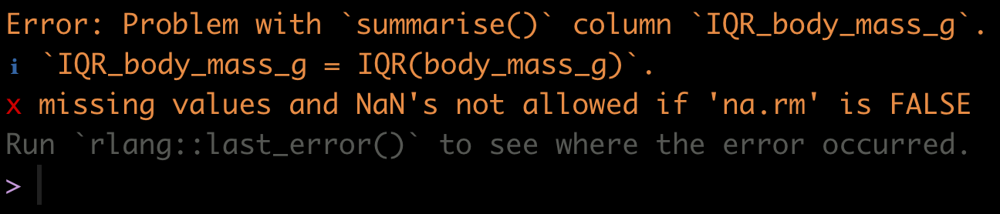

library(dplyr)
library(ggplot2)
library(readr)
library(palmerpenguins)
library(knitr)
library(janitor)
library(biol202)6 Describing a single variable
Tutorial learning objectives
In this tutorial you will:
- Learn how to calculate the main descriptor of a categorical variable: the proportion
- Learn how to calculate measures of centre and spread for a single numerical variable
6.1 Load packages and import data
Let’s load some packages first:
We will use the following datasets in this tutorial:
- the
birdsdataset contains counts of different categories of bird observed at a marsh habitat - the
penguinsdataset that is available as part of thepalmerpenguinspackage
data(birds)6.2 Describing a categorical variable
The proportion is the most important descriptive statistic for a categorical variable. It measures the fraction of observations in a given category within a categorical variable.
For example, the birds dataset has a single variable called type that includes tallies (frequencies) of each of four categories of bird observed at a marsh habitat.
birds
#> # A tibble: 86 × 1
#> type
#> <fct>
#> 1 Waterfowl
#> 2 Predatory
#> 3 Predatory
#> 4 Waterfowl
#> 5 Shorebird
#> 6 Waterfowl
#> 7 Waterfowl
#> 8 Songbird
#> 9 Predatory
#> 10 Waterfowl
#> # ℹ 76 more rowsThe proportion of birds belonging to a given category is the same as the relative frequency of birds belonging to a given category.
In a previous tutorial, using the tigerdeaths dataset, we learned how to create a frequency table that included relative frequencies.
Let’s use the same approach for the birds dataset. First we create the frequency table, then we display the table with an appropriate heading:
birds.table <- birds %>%
count(type, sort = TRUE) %>%
mutate(relative_frequency = n / sum(n)) %>%
adorn_totals()
Note
NOTE If there are missing values (“NA”) in the categorical variable, the preceding code will successfully enumerate those and create an “NA” category in the frequency table.
Now display the table:
birds.table %>%
kable(caption = "Frequency table showing the frequencies of each of four types of bird observed at a marsh habitat (N = 86)", digits = 3)| type | n | relative_frequency |
|---|---|---|
| Waterfowl | 43 | 0.500 |
| Predatory | 29 | 0.337 |
| Shorebird | 8 | 0.093 |
| Songbird | 6 | 0.070 |
| Total | 86 | 1.000 |
We can see, for example, that the proportion (relative frequency) of birds belonging to the “Predatory” category was 0.3372093.
We calculate proportions (relative frequencies) using the simple formula:
\[\hat{p} = \frac{n_i}{N}\] Where \[n_i\] is the frequency of observations in the given category of interest i, and N is total number of observations (sample size) across all categories.
Note
Reminder Proportions, and thus relative frequencies, must be between 0 and 1.
6.3 Describing a numerical variable
Numeric variables are described with measures of centre and spread.
Before calculating descriptive statistics for a numeric variable, it is advisable to visualize its frequency distribution first. Why? Because characteristics of the frequency distribution will govern which measures of centre and spread are more reliable or representative.
If the frequency distribution is roughly symmetric and does not have any obvious outliers, then the mean and the standard deviation are the preferred measures of centre and spread, respectively
If the frequency distribution is asymmetric and / or has outliers, the median and the inter-quartile range (IQR) are the preferred measures of centre and spread
It is often the case, however, that all four measures are presented together.
Note
New tool Introducing the summarise function.
The dplyr package has a handy summarise (equivalently summarize) function for calculating descriptive statistics.
Check out its help file by copying the following code into your command console:
?summariseLet’s use the penguins dataset for our demonstrations.
The first step is to visualize the frequency distribution. Given that this is a numeric variable, we do this using a histogram, as we learned in a previous tutorial.
ggplot(data = penguins, aes(x = body_mass_g)) +
geom_histogram(binwidth = 500, colour = "black", fill = "lightgrey") +
xlab("Body mass (g)") +
ylab("Frequency") +
theme_bw()
We are reminded that the distribution of body mass is moderately positively skewed and thus asymmetric, with a single mode near 3500g. There are no obvious outliers in the distribution.
This means that the median and IQR should be the preferred descriptors of centre and spread, respectively.
6.3.1 Calculating the median & IQR
So let’s calculate the median and IQR of body mass for all penguins. Let’s provide the code, then explain after:
penguins %>%
summarise(
median_body_mass_g = median(body_mass_g),
IQR_body_mass_g = IQR(body_mass_g)
)Uh oh! If you tried to run this code, it would have given you an error:

We forgot that when we previously got an overview of the penguins dataset we discovered there were missing values (“NA” values)!
Note
TIP If there are “NA” values in the variable being analyzed, some R functions, such as the function median or mean, will simply return “NA”. To remedy this, we use the “na.rm = TRUE” argument.
Let’s try our code again, adding the “na.rm = TRUE” argument. And note that the key functions called within the summarise function are median and IQR (case sensitive!).
penguins %>%
summarise(
Median = median(body_mass_g, na.rm = TRUE),
InterQR = IQR(body_mass_g, na.rm = TRUE)
)
#> # A tibble: 1 × 2
#> Median InterQR
#> <dbl> <dbl>
#> 1 4050 1200In the preceding code chunk, we have:
- The name of the tibble (here
penguins) being used in the subsequent functions - A pipe “%>% to tell R we’re not done coding
- The
summarisefunction (summarizewill work too), telling R we’re going to calculate a new variable - The name we’ll give to the first variable we’re creating, here we call the variable “Median” (the “M” is capitalized to distinguish this variable name from the function
median) - And we define how to calculate the “Median”, here using the
medianfunction - We feed the variable of interest from the
penguinstibble, “body_mass_g”, to themedianfunction, along with the argument “na.rm = TRUE” - We end the line with a comma, telling R that we’re not done providing arguments to the
summarisefunction - We do the same for the inter-quartile range variable we’re creating called “InterQR”, calculating the value using the
IQRfunction, and this time no comma at the end of the line, because this is the last argument being provided to thesummarisefunction - We close out the parentheses for the
summarisefunction
6.3.2 Calculating the mean & standard deviation
Although the median and IQR are the preferred descriptors for the body_mass_g variable, it is nonetheless commonplace to report the mean and standard deviation also.
Let’s do this, and while we’re at it, include even more descriptors to illustrate how they’re calculated.
This time we’ll put the output from our summarise function into a table, and then present it in a nice format, like we learned how to do for a frequency table.
Let’s create the table of descriptive statistics first, a tibble called “penguins.descriptors”, and we’ll describe what’s going on after (NOTE this code chunk was edited slightly on Sept. 30, 2021):
penguins.descriptors <- penguins %>%
summarise(
Mean = mean(body_mass_g, na.rm = T),
SD = sd(body_mass_g, na.rm = T),
Median = median(body_mass_g, na.rm = T),
InterQR = IQR(body_mass_g, na.rm = T),
Count = sum(!is.na(body_mass_g)),
Count_NA = sum(is.na(body_mass_g)))The first 4 descriptive statistics are self-explanatory based on their variable names.
The last two: “Count” and “Count_NA” are providing the total number of complete observations in the body_mass_g variable (thus the number of observations that went into calculating the descriptive statistics), and then the total number of missing values (NAs) in the variable, respectively.
The last two lines of code above require further explanation:
This code: Count = sum(!is.na(body_mass_g)) counts the observations that are not missing. Reading it from the inside out:
is.na()asks of each value, “is this one missing?”, and returnsTRUEorFALSEfor each- the
!means not, so it flips those answers around:TRUEnow marks every value that is present sum()adds them up. R counts eachTRUEas 1 and eachFALSEas 0, so summing them counts the non-missing observations.
The same coding approach is used in the last line: Count_NA = sum(is.na(body_mass_g)). It is the same idea without the !, so it counts the values that are missing.
Note
This pair is worth committing to memory:
sum(!is.na(x))— how many values ofxare presentsum(is.na(x))— how many are missing
You will use both all term. They use only base R, so they work anywhere, without loading any package.
Note
TIP It is important to calculate the total number of complete observations in the variable of interest, because, as described in the Biology Procedures and Guidelines document, this number needs to be reported in figure and table headings.
Now let’s show the table of descriptive statistics, using the kable function we learned about in a previous tutorial.
penguins.descriptors %>%
kable(caption = "Descriptive statistics of measurements of body mass (g) for 342 penguins", digits = 3)| Mean | SD | Median | InterQR | Count | Count_NA |
|---|---|---|---|---|---|
| 4201.754 | 801.955 | 4050 | 1200 | 342 | 2 |
Note
In another tutorial we’ll learn how to present the table following all the guidelines in the Biology Guidelines and Procedures document, including, for example, significant digits. For now, the preceding table is good!
CautionActivity
Descriptive statistics: Create a histogram and table of descriptive statistics for the “flipper_length_mm” variable in the penguins dataset.
6.4 Describing a numerical variable grouped by a categorical variable
In this tutorial you’ll learn how to calculate descriptive statistics for a numerical variable grouped according to categories of a categorical variable.
For example, a common scenario in biology is to want to calculate and report the mean and standard deviation of a response variable for different “treatment groups” in an experiment. (More commonly we would report the mean and standard error, but that’s for a later tutorial!).
It is straightforward to modify the code we used in the preceding tutorial to do what we want.
Specifically, we use the group_by function from the dplyr package to tell R to do the calculations on the observations within each category of the grouping variable.
For example, let’s describe penguin body mass grouped by “species”.
We’ll create a new tibble object called “penguins.descriptors.byspecies”, and we insert one line of code using the group_by function, and telling R which categorical variable to use for the grouping (here, “species”):
penguins.descriptors.byspecies <- penguins %>%
group_by(species) %>%
summarise(
Mean = mean(body_mass_g, na.rm = T),
SD = sd(body_mass_g, na.rm = T),
Median = median(body_mass_g, na.rm = T),
InterQR = IQR(body_mass_g, na.rm = T),
Count = sum(!is.na(body_mass_g)),
Count_NA = sum(is.na(body_mass_g)))It’s that simple!
Let’s have a look at the output:
penguins.descriptors.byspecies
#> # A tibble: 3 × 7
#> species Mean SD Median InterQR Count Count_NA
#> <fct> <dbl> <dbl> <dbl> <dbl> <int> <int>
#> 1 Adelie 3701. 459. 3700 650 151 1
#> 2 Chinstrap 3733. 384. 3700 462. 68 0
#> 3 Gentoo 5076. 504. 5000 800 123 1
CautionActivity
Use the kable function to output this new tibble in a nice format.